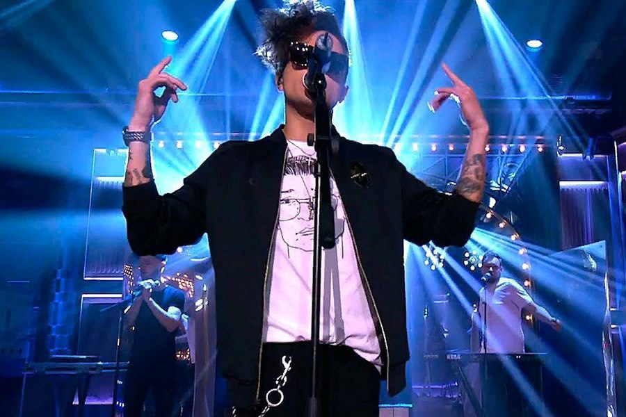
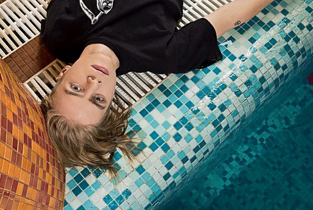
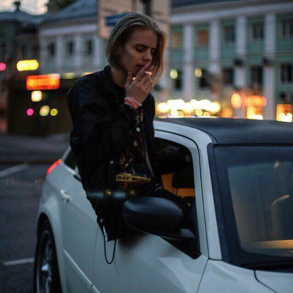
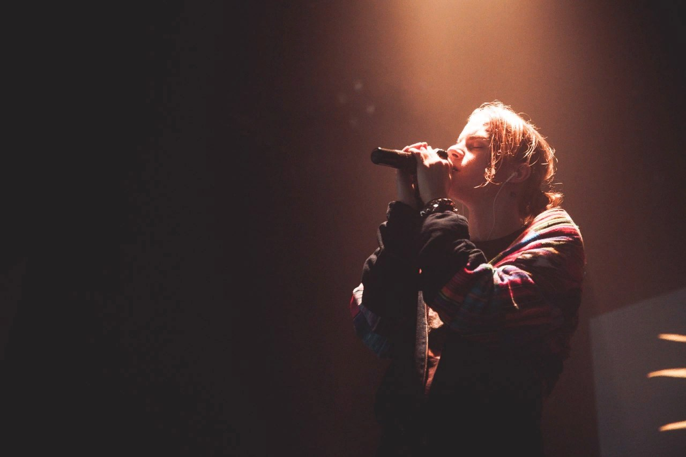

ЛСП

ЛСП в той или иной степени сотрудничал с Aes Genius, Yung Trappa, Oxxxymiron, Pharaoh, Yanix, Big Russian Boss. С 2011-го принято отсчитывать начало сольной карьеры ЛСП. Тогда увидел свет сольный альбом «Видеть цветные сны», песни с которого музыкант до этого выкладывал в сеть. В 2012-м ЛСП становится дуэтом: к Олегу присоединяется битмейкер Рома Сащенко, известный как Рома Англичанин. Роман отвечал за сведение релиза дебютного сольника Олега, в команде, помимо композиторства, по сути занял место продюсера. Альбом «Виселицца» включает 8 песен. Альбом вошел в тройку лучших на 2014 год и в топ-20 лучших за первые десять лет нового века. Критики отметили, что в песнях Олег, в отличие от других рэперов, удачно выступил как сторителлер. Летом 2017 сотрудничество Сащенко и Савченко прервалось смертью Англичанина. О причинах смерти семья артиста не сообщала. На песню «Тело» Олег снял клип, который посвятил ушедшему другу. Роль Романа исполнил похожий на рэпера блогер Дмитрий Ларин. Клип занял первое место в Русском чарте MTV.
В ноябре подведены итоги голосования Jagermeister Music Awards 2017 - первой премии независимой музыки в России, Казахстане, Украине и Беларуси. ЛСП назван группой года.
PHARAOH

Pharaoh – кумир молодежи, новое явление в современной российской рэп-культуре. Он – представитель так называемого «клауд-рэпа», который характеризуется медленными битами, плавной читкой и философскими, зачастую депрессивными текстами.
Pharaoh – творческий псевдоним Глеба Голубина. С 6 до 13 лет Глеб профессионально занимался футболом, выступал за клубы «ЛОКОМОТИВ», «ЦСКА» и «ДИНАМО». Поступив в университет, Голубин часто гонял мяч с однокурсниками, а когда вдруг стал известным рэпером, почти перестал появляться в ВУЗе. Зато во время сессии, когда Глеб все-таки приходит сдавать экзамены, с ним охотно фотографируются первокурсницы. Первая порция славы к Фараону пришла в феврале 2014-го, когда вышел клип на песню «Ничего не изменилось». Продюсера у Глеба нет – он сам себе режиссер и по совместительству лидер творческого объединения DEAD DYNASTY, которое создал рэпер из Уфы BOULEVARD DEPO.
